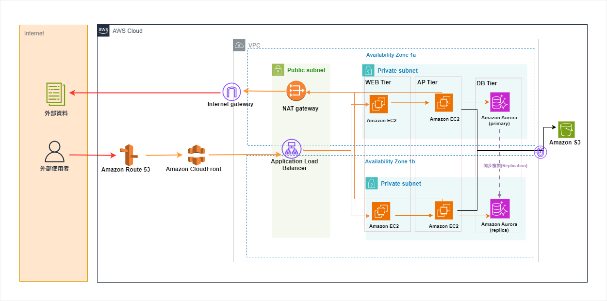

Multi-AZ · CloudFront + ALB + EC2 + Aurora PostgreSQL + S3

OO銀行數位轉型專案，在 Asia Pacific (Tokyo) 部署以下架構，請使用 AWS Pricing Calculator 估算本月總費用，並截圖 Summary 頁面作為作業繳交。
calculator.aws → 點選
「Create estimate」 →
搜尋服務時，每個服務都要確認 Region 選為
Asia Pacific (Tokyo)
Route 53 → Add to estimateEC2 → Add to estimatet3.mediumEC2 → Add to
estimate（另建一組）t3.mediumAurora → Add to estimatedb.r6g.largeS3 → Add to estimateCloudFront → Add to estimateElastic Load Balancing → Add to
estimateVPC → Add to estimate| 服務 | 層級 | 計費邏輯 | 月費 (USD) |
|---|---|---|---|
| Amazon Route 53 | WEB | 1 zone 月費 + 50萬 queries ÷ 100萬 × query單價 | $0.7 |
| Amazon CloudFront | WEB | 800 GB × Asia Pacific 單價/GB | $96 |
| Application Load Balancer | WEB | 固定費（$0.008 × 720hr）+ LCU費（Processed bytes 16 GB / month） | $17.87 |
| NAT Gateway | WEB | 固定費（單價 × 720hr）+ 80 GB × 流量單價 + 區域NAT固定費 | $50.22 |
| EC2 t3.medium × 2（WEB Tier） | AP | t3.medium單價 × 720hr × 2台 + EBS（50GB × 單價 × 2台） | $89.02 |
| EC2 t3.medium × 2（AP Tier） | AP | t3.medium單價 × 720hr × 2台 + EBS（50GB × 單價 × 2台） | $89.02 |
| Aurora PostgreSQL (r6g.large) | DB | db.r6g.large單價 × 720hr × 2台（Primary + Replica）+ 120 GB × 儲存單價 | $472.01 |
| Amazon S3 Standard | DB | 300 GB × 單價/GB | $7.5 |
| 每月合計（On-Demand · Asia Pacific Tokyo） | $822.34 | ||
AWS 採用「用多少付多少」的計費模型，每項服務有獨立的計費單位。本頁說明架構中每個服務的計算公式、東京 Region 的費率，以及三種典型使用情境的費用估算。